While choosing the right migration strategies, such as re-hosting or re-architecting, one must access the different risks, costs, and benefits. However, often the details of what is where and what is dependent on what within the technical stack is missing or poorly documented. All that may exist is out of date diagrams and a mix of monitoring tool metrics that must be "stiched" together.
Not having enough details about the current environment is hindering organization's ability to make the right decisions when planning what to migrate and when.
To address this problem, Dynatrace's OneAgent can automatically discover the application, services, processes and to build a complete dependency mapping for the entire application environment. So, let's begin!
Objectives of this Lab
üî∑ Review Dynatrace OneAgent
üî∑ Review real-time data now available for the sample application
üî∑ Review how Dynatrace helps with modernization planning
Referring to the picture below, here are the components for lab 1.
#1 . Sample Application
Sample app representing a simple architecture of a frontend and backend implemented as Docker containers that we will review in this lab.
#2 . Dynatrace monitoring
The Dynatrace OneAgent has been installed by the workshop provisioning scripts and is communicating to your Managed Dynatrace Tenant.
#3 . Load generator process
A JMeter process sends simulated user traffic to the sample app running within a Docker container. You will not need to interact with this container, it just runs in the background.

Negative: A real-world scenario would often start with the application components running on a physical or virtualized host on-prem and not "Dockerized". To simplify the workshop, we "Dockerized" the application into a front-end and back-end. In Dynatrace, these Docker containers all show up as "processes" on a host just like a "non-Dockerized" application will.
This step just requires you to run a script that will provision several AWS resources and the Dynatrace configuration needed for the workshop.
Let's Begin
From the Cloudshell window, run these commands to start the provisioning process:
cd ~/aws-modernization-dt-orders-setup/provision-scripts
./provision-workshop.sh
The script output will look like this:
===================================================================
About to Provision Workshop - k8
===================================================================
Proceed? (y/n)
Select Y and when it completes, it will look like this:
...
...
=============================================
Provisioning AWS workshop resources COMPLETE
End: Tue Jun 16 14:42:22 EDT 2020
=============================================
The script will run fast, but it will take about 1-2 minutes for the CloudFormation script to complete.
What this script is doing
- AWS resources - using AWS CLI
- Add a KeyPair for the EC2 Instances called YOUR_LAST_NAME-dynatrace-modernize-workshop
- AWS resources - using a CloudFormation stack created by the AWS CLI
- Add a CloudFormation stack named
YOUR_LAST_NAME-dynatrace-modernize-workshop - Add a VPC named
YOUR_LAST_NAME-dynatrace-modernize-workshop - Add EC2 instance named:
YOUR_LAST_NAME-workshop-monolithwith a new security group named security_group_workshop-ez - At EC2 startup, it installs Docker and Docker-Compose
- At EC2 startup, it installs the OneAgent for your Dynatrace tenant
- Starts up the sample application
- Dynatrace configuration
- Set global Frequent Issue Detection settings to Off
- Adjust the Service Anomaly Detection
- Add Management Zones for the monolith and micro services versions of the application
- Add Auto Tagging Rules to drive management zone and SLO settings
- Add SLOs for a use in custom dashboards
Review CloudFormation Output
As mentioned above, it may take a few minutes, but you can check the CloudFormation output to ensure that all the AWS resources were provisioned successfully.
Monitor CloudFormation stack status within the AWS console. Navigate to the CloudFormation page or just navidate to: * https://console.aws.amazon.com/cloudformation/home
When it is complete, it will show a CREATE_COMPLETE status as shown below, but with your unique stack name.

Cloud modernization is a challenging problem and it can be extremely costly for your business if you don't prepare properly for it. As you modernize and move apps to the AWS cloud, there are three generally acknowledged areas to focus on around the decision and execution process:
Plan better
- Evaluate that the app is well suited for cloud with essential early insights
- Assess that the new design and cloud architecture will work well and be effective
Execute faster
- Avoid problems that impact service delivery and cause delays by identifying issues quickly, in full context
- Resolve problems faster, reducing overall project risk
Optimize operations
- Feel confident that expectation is met for service delivery through clarity on performance before and after migration to the cloud
- Identify areas for automation
Lets dig deeper into the ways Dynatrace helps in each phase of our modernization journey.

#1: Understanding the Legacy Application
With Dynatrace OneAgent and Smartscape technologies, it is now fast and easy to answer these questions about the our existing applications:
üî∑ Which technologies are in use and where do they run?
üî∑ How can I aggregate multiple services to have a big picture of the legacy app?
üî∑ Who is responsible and needs to be included in the discussion?
üî∑ How can I make sense of all the Spaghetti codes in the legacy app?
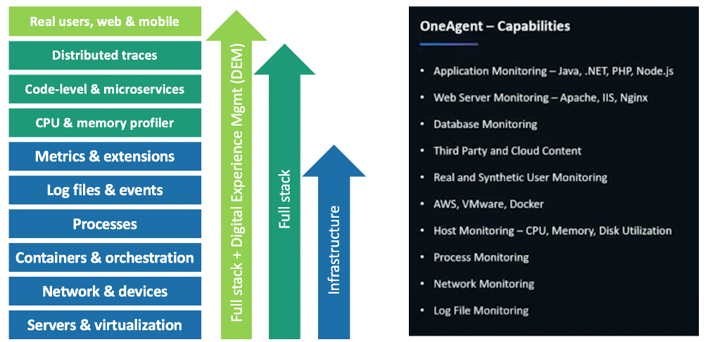
The Dynatrace Smartscape topology map enables you to understand the actual connection between all captured metrics, traces, logs, and user experience data. Other than mere time-based correlation, topology mapping reveals the actual causal dependencies between captured data. This is the basis for Dynatrace's radically different AI engine, Davis.

Understanding application usage patterns
Dynatrace automatically generate a blueprint of existing infrastructure, services and the application landscape thanks to Dynatrace Smartscape Technology. Dynatrace baselines existing on-premise applications, automatically detects all dependencies (internal as well as external) and calculates current resource consumption.
Dynatrace has out-the-box dashboards for each tier in the stack.
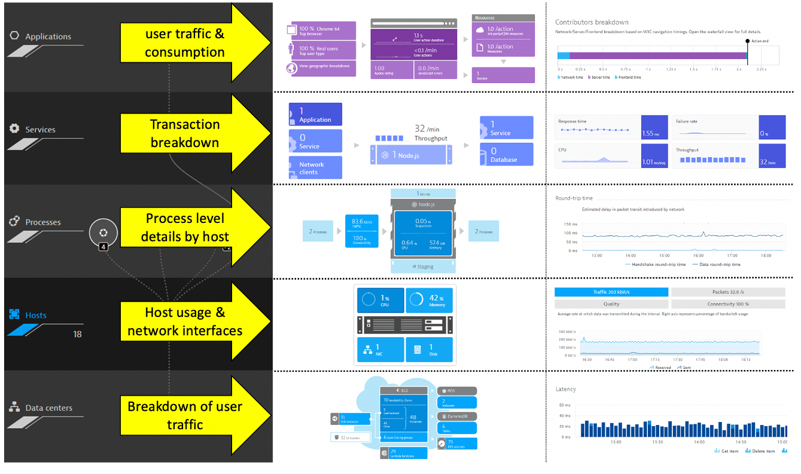
Incoming and outgoing connection to processes running monitored hosts is another view created automatically.

Instead of gathering this data from multiple tools, all teams can look to one source to help answer questions such as:
üî∑ What will it cost to run in the cloud?
üî∑ What network traffic will there be between the services we migrate and those that have to stay in the current data center?
üî∑ How can I make sense of all the Spaghetti codes in the legacy app?

Making decision for the application migration strategy
Dynatrace provides immediate feedback on decisions & transformation. By monitoring the progress of shifting workloads to the cloud, it helps make better decisions on what to move when based on how tightly coupled services are and on the automatic baseline comparison between pre-migration and in-migration. One feature for this is the service flow, where dependencies and usage can be analyzed.
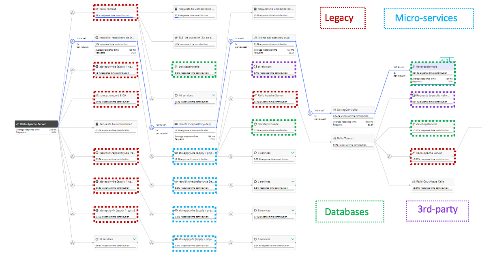
This automatically built view along with other views such as the Smartscape view allows for "virtual" monolith to micro service migration planning without code changes. This enable smarter re-architecture and re-platforming decisions based on the existing on-premise workload and to validate other non-functional requirements such as scale, failover, costs.

Benchmarking performance and ensuring service levels
At high level, we know we must first establish system benchmarks and then, during and post migration. With the AI-supported base lining on the migrated services, Dynatrace allows for validating the success of the migration project from a performance, resource and cost perspective.
With the build-in "hot-spot" analysis and performance analysis capabilities, Dynatrace can help pinpoint when issues show up. Here is one example where a problem has identified to be within the code execution area. From there, one can drill into method level hot spots to see what might have changed and is impacting service levels.

Migration often means moving to new technologies such as Kubernetes. Dynatrace monitors native Kubernetes and managed Kubernetes service like AWS EKS. Dynatrace auto-discovers any environment and provides full observability without any configuration or code changes. No matter your cloud platform, container runtime or service mesh layer, Dynatrace makes monitoring applications and clusters simple.

By providing a single view into hybrid cloud environments and support for new technologies like Kubernetes, validating business outcomes is simplified.
Increased complexity for operations
Adopting modern architectures and cloud services means automating monitoring tasks, remediation tasks and ITSM tasks.
Traditional observability solutions offer little information beyond dashboard visualizations. At the end, it remains to human experts to analyze the data in time-consuming war rooms. Despite all efforts, too many user complaints stay unresolved. Dynatrace is the only software intelligence platform that reliably takes that burden off human operators. Davis, the Dynatrace causation-based AI engine, automates anomaly root-cause analysis and is custom built for highly dynamic micro service environments.
Dynatrace's purpose-built AI engine, Davis, sits at the core of Dynatrace and delivers AI-powered insights, detects problems, which are opened when Dynatrace detects anomalies with your applications (impacting end users), services (impacting service levels) or infrastructure (unhealthy system components) for hybrid cloud environments.

üî∑ Built at the core of the Dynatrace platform Davis processes all observability data across the full technology stack, independent of origin.
üî∑ Precise technical root-cause analysis. Davis pinpoints malfunctioning components by probing billions of dependencies in milliseconds.
üî∑ Identification of bad deployments. Davis knows exactly what deployment or config change has introduced the anomaly in the first place.
üî∑ Discovery of unknown unknowns. Davis does not rely on predefined anomaly thresholds but automatically detects any unusual "change points" in the data.
üî∑ Automatic hypothesis testing by systematically working through the complete fault tree.
üî∑ No repetitive model learning or guessing. Unlike machine learning approaches, Davis' causation-based AI relies on a topology map, which is updated in real-time.
You gain advanced observability across cloud and hybrid environments, from microservices to mainframe. Automatic full-stack instrumentation, dependency mapping and AI-assisted answers detailing the precise root-cause of anomalies, eliminating redundant manual work, and letting you focus on what matters, delivering instant answers across the full stack.
As a result, you gain advanced observability across cloud and hybrid environments, from microservices to mainframe. Automatic full-stack instrumentation, dependency mapping and AI-assisted answers detailing the precise root-cause of anomalies, eliminating redundant manual work, and letting you focus on what matters, delivering instant answers across the full stack.

Enabling modern operations
In order to do more with less and scale, Operations team must transcend IT silos, foster collaboration and improve productivity. Automation is key component of this, but it takes platforms that can integrate into the enterprise eco-system and delivery pipelines. Using the Dynatrace data, AI enabled problems, events, Smartscape and APIs use cases such these are achievable today:
- Eliminate the QA analysis bottleneck and deliver better software faster
- Solve problems faster with AI-driven closed loop ITSM integration
- Automate Problem Remediation
The Dynatrace Software Intelligence Platform established a smart cloud ecosystem that enables modern operations that can:
- Ingest more data to fill blind spots
- Pull in data from Cloud Platforms
- Trigger orchestration
- Integrate with your Delivery Tools
- Exchange data with your business systems

In summary, Dynatrace delivers extremely high-fidelity answers to each of these key areas through its automatic and intelligent observability for discovery and instrumentation, topology dependency mapping, full stack context, and actionable answers to problems. You can modernize and ensure every app is available, functional, fast, and fully optimized across all channels.
The sample application is called Dynatrace Orders. A more detailed overview can be found here. All the source code can be found here.
Get the Public IP to the frontend of the Sample Application.
To get the Public IP, open the EC2 instances page in the AWS console. On the newly created host YOURNAME-dt-orders-monolith find the Public IP as shown below.

View the Sample app in a Browser
To view the application, paste the public IP using HTTP NOT HTTPS into a browser that will look like this:
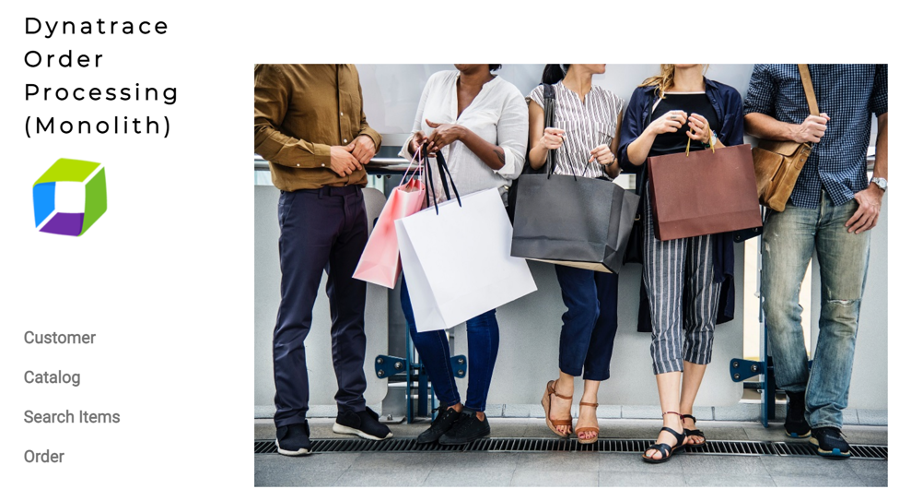
Use the menu on the home page to navigate around the application and notice the URL for key functionality. You will see these URLs later as we analyze the application.
- Customer List =
customer/list.html - Customer Detail - Each product has a unique page =
customer/5.html - Catalog List =
catalog/list.html - Catalog Search Form =
catalog/searchForm.html - Order List =
order/list.html - Order Form =
order/form.html
The host running the sample application were all created using scripts that installed the sample application and to install the Dynatrace OneAgent. Since we don't have to install the OneAgent now, let's just review its status.
- Login into Dynatrace
- Choose the
Deployment statusoption from the left side menu to open the OneAgent deployment page.

Review another way to install the OneAgent
- Choose the
Deploy Dynatraceoption from the left side menu to open the OneAgent deployment page. - Click the
Start installationbutton. This will open the Download page. - On the
Download agentpage, pick the platformLinuxto view the commands will download and run the OneAgent installer.
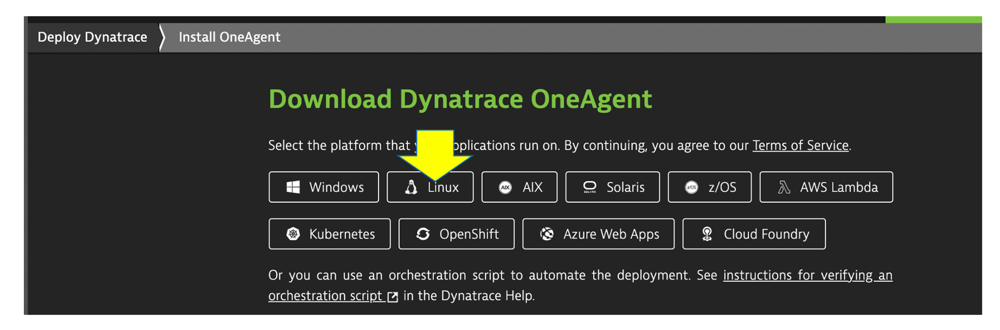
1 . These are the commands used to download, verify, and install the OneAgent. That is it!

2 . Go back the Download agent page and review other options like Windows or Kubernetes.
In the next few sections, you will review what the OneAgent automatically discovered for the host, services, processes, and the complete dependency mapping for the sample application.
üëç How this helps
As you plan your migration, each of these views will give insights into accessing the profile, consumption and dependencies to other systems and services.
Review Hosts
From the left-side menu in Dynatrace choose hosts then click on the host with the name dt-orders-monolith.

On host page, you will see basic infrastructure information for the host.
- Now expand the
Propertiessection to see data about the host: - Host resource metrics (CPU, memory)
- Host availability
- Discovered processes. The sample app is Node and Java based

Enterprises have many hosts, services, and application that are ever changing. The ability to automatically discover and change as the environment changes is a key feature that Smartscape delivers.
Dynatrace's near real-time environment-topology visualization tool, Smartscape, is where Dynatrace's auto-discovery is delivered into a quick and efficient visualization of all the topological dependencies in your infrastructure, processes, and services.
üëç How this helps
Smartscape shows all the dependencies of a given service. Those include connections to queues, web servers, app servers, and a native process. The host view shows historical and live time-series data for usage as well as the consuming processes. This information allows us to better plan the migration, as all depending services must be considered during the migration.
Referring to the picture above:
- On the horizontal axis, it visualizes all ingoing and outgoing call relationships within each tier
- On the vertical axis, it displays full-stack dependencies across all tiers
- Data center
- Hosts
- Process
- Service
- Application
Review Smartscape
Let's see how Dynatrace can visualize these processes using Smartscape.
- Be sure you are on the
dt-orders-monolithhost page - Just click on the
...box on the to the right of the host name - pick
Smartscape viewmenu option - this will open Smartscape filtered to this Host Instance

Feel free to explore the Smartscape.
In the Smartscape view, we saw the visualizations of the relationships in vertical stack and as well as the relationships spatially. Now let's view the processes and services running on the host.
As you plan your migration, you need more than just host level metrics. Knowing the details for each service, BEFORE you change it, will lower the risk of impacting the business.
üëç How this helps
Very quickly we have seen what processes and services are running on a host AND more importantly, what processes and services call (outbound) and are being called (inbound). Having a real-time picture is certainly more accurate that out of date documentation.
Lets Review!
Return back to the host view for the host with the prefix of dt-orders-monolith and locate the Processes and Containers section.
Click on the monolith-frontend process to open the process detail view.

Process view
You should be on the process page where you will see information for this process. Follow the picture below to locate the following:
- Click on the
Propertiesline to toggle on/off to see additional data. Did you notice Docker? - On the info graphic, click to view the processes that call this process (Inbound)
- On the info graphic, click to view the services that are served by this process. In this case there are multiple
- On the info graphic, click to view the processes that this process calls (Outbound)

Dynatrace and containers
In the picture above, the arrow shows the properties for Docker.
Our sample app was built as a Docker container and Dynatrace hooks into containers and provides code for injecting OneAgent into containerized process.
How Dynatrace monitors containers

Dynatrace hooks into containers and provides code for injecting OneAgent into containerized processes.
There's no need to modify your Docker images, modify run commands, or create additional containers to enable Docker monitoring. Simply install OneAgent on your hosts that serve containerized applications and services. Dynatrace automatically detects the creation and termination of containers and monitors the applications and services contained within those containers.
View a Service
Now Let's review a specific service.
- Click the
servicessquare above the host infographic to open the list of services - From the list of services, choose the
frontend

Service View
You should be on the service page where you will see information for this specific service. Follow the picture below to locate the following:
- Click on the
Propertiesline to toggle on/off to see additional data - Click to view the services that call this service (Inbound)
- Click to view the services that this service calls (Outbound)
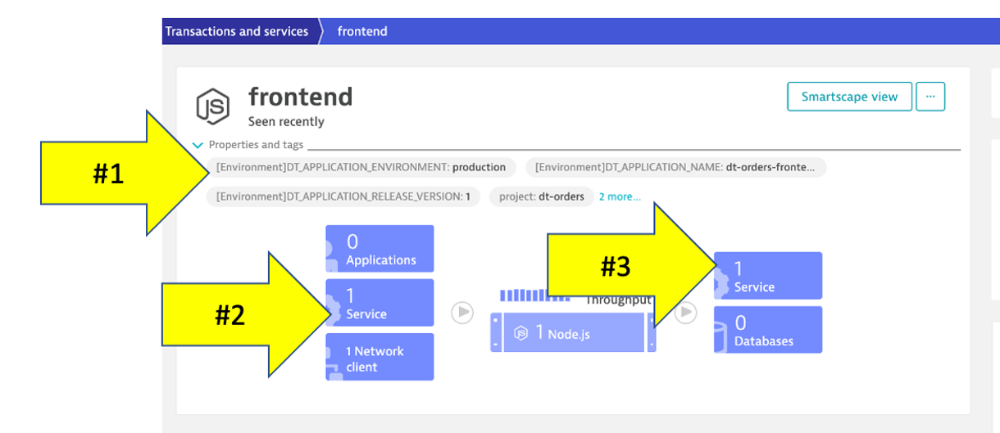
Web applications consist of web pages that are served by web servers and web application processes, for example Tomcat. Web and mobile applications are built upon services that process requests like web requests, web service calls, and messaging.
Such "server-side services" can take the form of web services, web containers, database requests, custom services, and more. Services may in turn call other services such as web services, remote services, and databases services.
üëç How this helps
As you plan your migration, it is important to gain a complete picture of interdependency to the rest of the environment architecture at host, processes, services, application perspectives. Since time is always scarce, being able to do this in a single place can shorten assessment timelines.
Services
Let's now take a look at all the services being monitored by clicking on the Services left side Dynatrace menu.
The filtered list should now look like this:

Choose the frontend service.
On the frontend service page, find the Dynamic Web Requests section on the right and click the view Dynamic Requests button to see what it calls.

On this page you can view the transactions as time-series charts.

On this page you can view the "top requests" and their response time consumption. You should recognize the URLs from the sample app!

By clicking on one of the requests, the time-series charts are filtered to just that one request.

Analysis View
On the top if the page on the right is a button labeled Create Analysis view, click that.

Tryout the options available to view, filter and analyze data.

We just saw one way to review process and service communication, but let's look at how Dynatrace understands and visualizes your applications' transactions from end-to-end using SService Backtraces and Service flows
- With
Service flow, you see the flow of service calls FROM a service, request, or their filtered subset. Along with the specific services that are triggered, you can also see how each component of a request contributes to the overall response time. - With
Service backtrace, you see the calls TO a service.
üëç How this helps
As you plan your migration, it is important to gain a complete picture of interdependency to the rest of the environment architecture at host, processes, services, and application perspectives. Since time is always scarce, being able to do this in a single place can shorten assessment timelines.
Knowing the type of access, executed statements, and amount of data transferred during regular hours of operation allows for better planning and prioritization of the move groups. In some cases, you may decide to not migrate this database in favor of other services or databases that are less complex to migrate due to fewer dependencies.
Review Service Flow
- Return to the
frontendservice. You can use thebreadcrumbmenu as shown below. 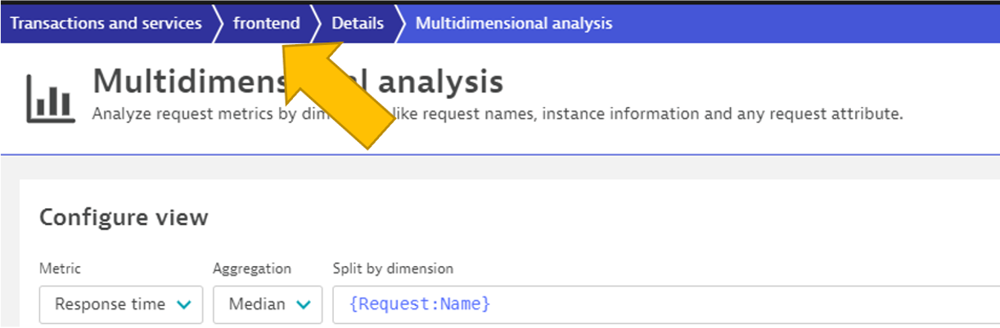 - On the
frontendservice page, locate the Understand dependenciessection on the right, and then click theview Service flow` button.
Response time perspective
You should now be on the Service flow page.
Right away, we can see how this application is structured:
- Frontend calls backend
- Backend calls database
Refer to the numbers in the picture above:
- The timeframe defaults to whatever you have your global timeframe selector set to, up to a maximum of 24 hours.
- We are viewing the data from a Response time perspective. Shortly, we will review the Throughput perspective.
- Click on the boxes to expand the response time metrics. We can see that most of the response time, most of the time is spent in the backend service.
- Even though there are a few calls to the database for every backend service request, only a very small amount of the response time is spent in the database.
Throughput perspective
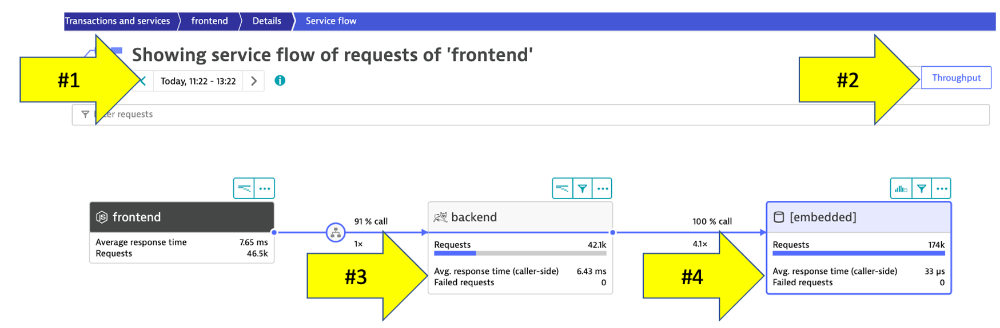
Refer to the numbers in the picture above:
- The timeframe defaults to 10 minutes but can be adjusted
- Change to the Throughput perspective by clicking on the box
- Click on the boxes to expand the metrics to see the number of requests and average response times going to the backend sevice
- We can see the number of requests to
backenddatabase
Dynatrace understands your applications transactions from end to end. This transactional insight is visualized several ways like the backtrace.
The backtrace tree view represents the sequence of services that led to this service call, beginning with the page load or user action in the browser.
üëç How this helps
Using the service flow and service backtrace, these two tools give you a complete picture of interdependency to the rest of the environment architecture at host, processes, services, and application perspectives.
Review Service backtrace
Let's now take a look at the Services by clicking on the Services left side Dynatrace menu.
Pick the backend service.
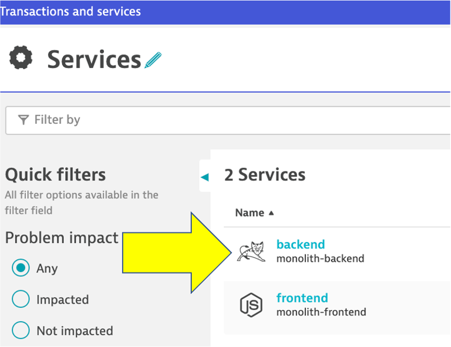
On the backend service, click on the Analyze Backtrace button.

You should be on the service backtrace page where you will see information for this specific service.
This will get more interesting in the next lab, but for the monolith backend, we can see that the backtrace is as follows:
- The starting point is the
backend backendis called by thefrontendserviceApacheJMetertraffic from the load generator script- You may also see browser traffic to the frontend from the
My web application. If you don't that is OK.
If you click on any of the rows in the backtrace, the bottom portion of the page will expand.

As you plan your migration, Database observability is critical to a successful plan. Knowing the type of access, executed statements, and amount of data transferred during regular hours of operation allows for better migration planning and prioritization of the move groups. In some cases, you may decide to not migrate this database in favor of other services or databases that are less complex to migrate due to fewer dependencies.
üëç How this helps
When monitoring database activity, Dynatrace shows you which database statements are executed most often and which statements take up the most time. You can also see which services execute the database statements what will be direct input to migration planning and prioritization of the move groups.
Dynatrace monitors all the popular database SQL Server, Oracle, MongoDB to name a few. See Dynatrace documentation for more details on platform support.
Navigate to the Database
To learn some out-of-the-box features of Dynatrace. Let's do a quick review of the database that exists for the sample application.
- Lets get back to the
backendservice. One way is to go back to theServicesleft side Dynatrace menu and then pick thebackendservice. - On the
backendservice page, click on the[embedded]database to open the database service page.
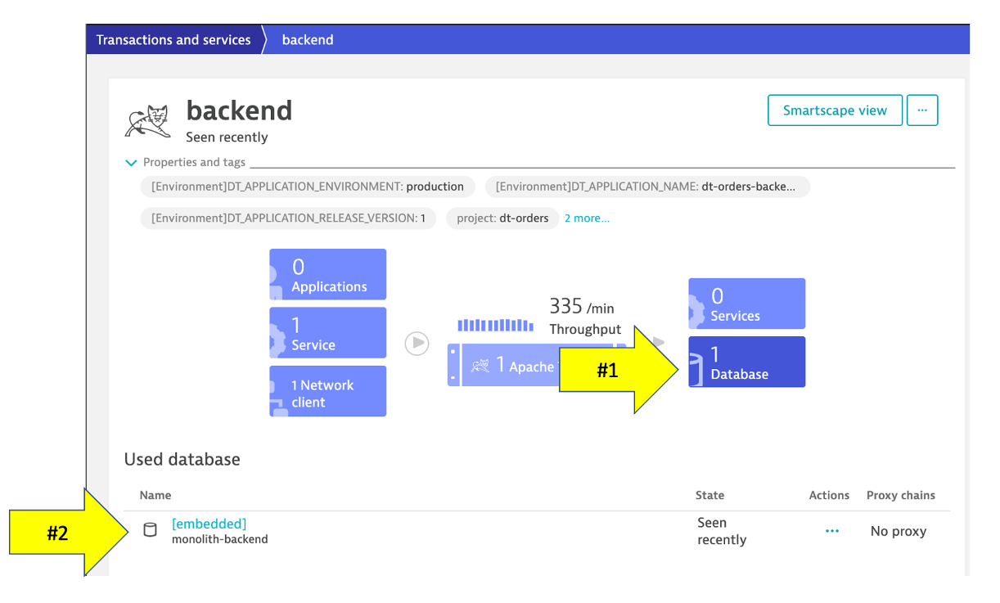
Database Review
The sample application uses an In memory Java relational database. On this page you can explore the database process like
- What services call this database
- Database availability
- View individual SQL statements
- Custom metric analysis

By default, Dynatrace gives you FullStack horizontal (who talks to whom) and vertical (what runs on what) dependency visibility as part of Dynatrace Smartscape! All without a single line of code or configuration change – just by installing the OneAgent.
Seeing which processes make up the monolith has been an eye-opener for many teams that have done this exercise. "Oh – we completely forgot about the dependency to this legacy process we introduced 5 years ago!" – that's a common thing you hear!
As you plan your migration, knowing what technologies make up your eco-system is key so what you can decide whether to migrate, refactor or replace certain services.
The workshop is somewhat limited, so here is an example from another environment.
üëç How this helps
This is another out-of-the-box feature that helps you understand what technologies are in your environment with a heat map presentation to what degree they exist.
Review Technologies and processes View
- Click on the Technologies and processes link on the left side menu within Dynatrace to view the technologies that OneAgent was able to automatically discover and instrument. 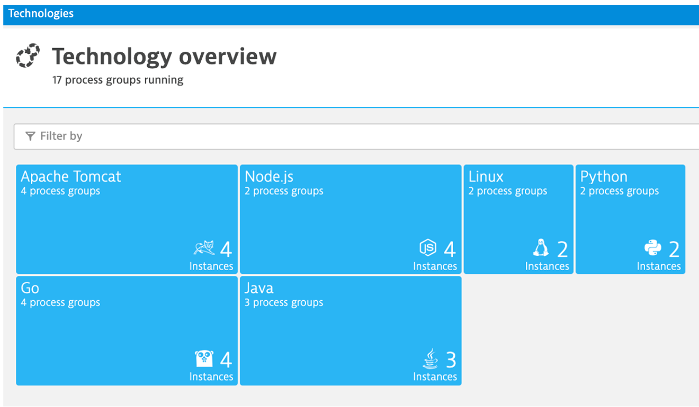
- In the filter box, type
tag, choosestage, and the value ofdev. It should look like this:
Planning Ahead
You can always click into the Hub menu within Dynatrace to learn about the many technologies that Dynatrace supports. This list is in sync and constantly updated in conjunction with the Dynatrace website hub page
By just installing the OneAgent, we have now gained a detailed topological view of sample application from the both the infrastructure and application tiers and we are now ready to tackle our adoption to the cloud armed with the answers we need.
- Right Priority - We now understand the complexity and interdependency of services and components to the rest of the environment architecture
- Right-Sizing the environment - We now understanding which resources are required to move along with their required resource consumption patterns
- Best Migration Strategy - We now understand the current end-to-end transactions through architecture and can choose the best migration strategy (rehost, refactor, rearchitect, rebuild)
One more resource to review
1 . Choose the Dynatrace Hub option from the left side menu to open the OneAgent deployment page.

2 . Explore all the integration options of Dynatrace while you are in the Hub
Checklist
In this section, you should have completed the following:
✅ Review Dynatrace OneAgent
✅ Review real-time data now available for the sample application
✅ Review how Dynatrace helps with modernization planning